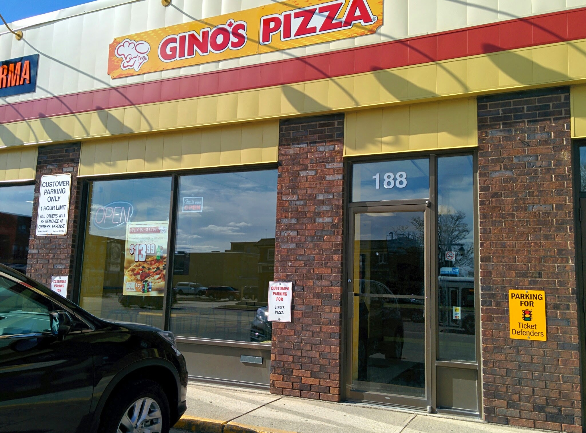
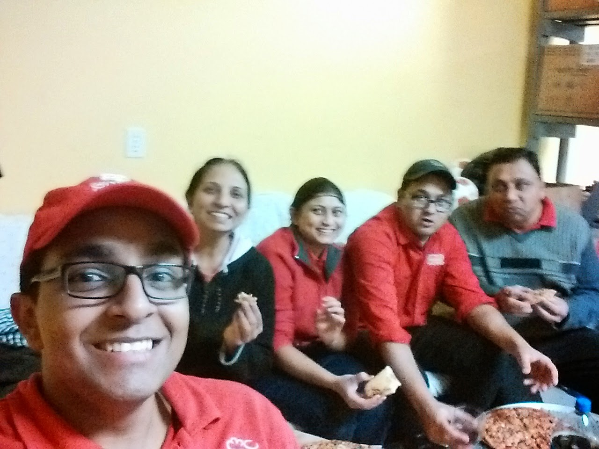
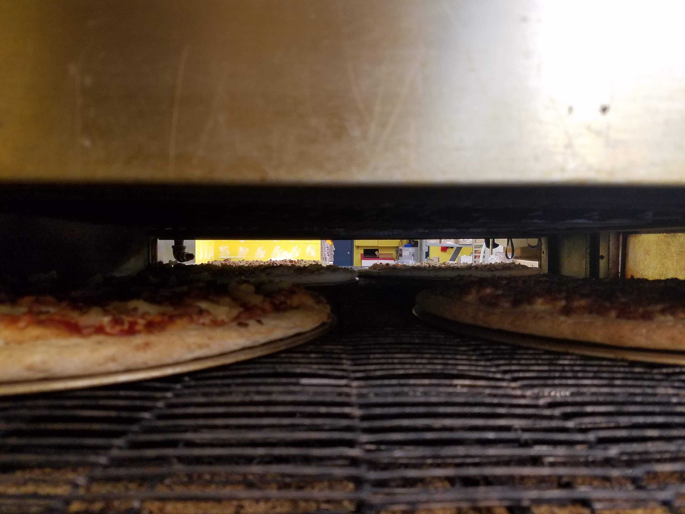
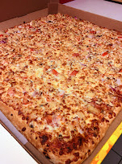
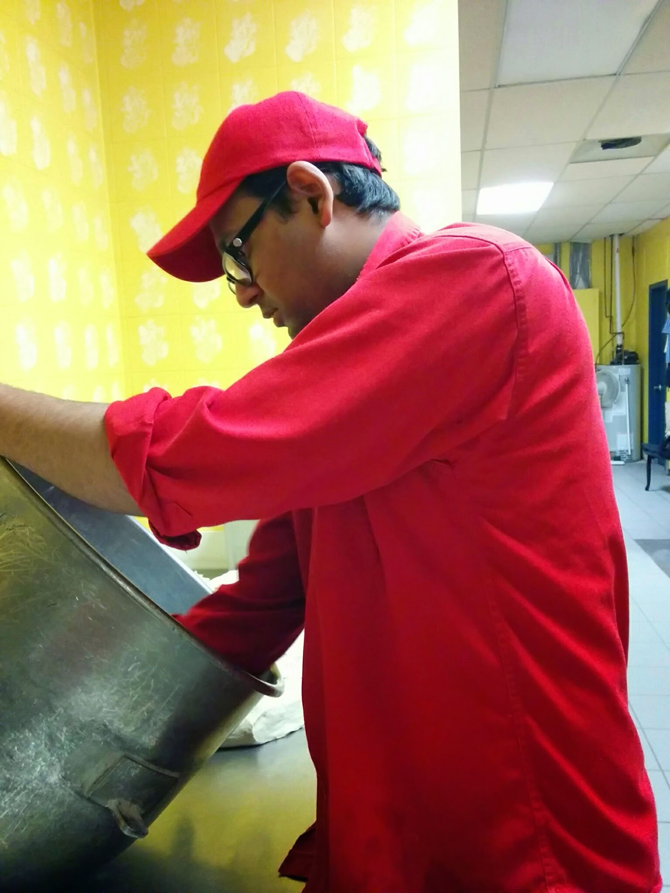

Lessons from running a pizza franchise with my family while in high school
My family ran a Gino's Pizza in Stratford, Ontario, from 2010 to 2020. My mom, my dad, and my brother worked it full time, and I helped out whenever I could through high school. This is what that was like, and what it taught me about running a small business.

The store was my mom, my dad, and my brother. All three of them worked it full time. My part was smaller. I was in high school, so I helped out whenever I could.
When it was really busy, with Stratford full of people in town to see the plays, I'd use my lunch period and the spare after it to go to the store. It was about a 10 minute walk from my school. I'd walk over, work the counter, and give lunch to all the tourist kids who came to Stratford to see a show. Then I'd go home.
By 4 or 5 PM the store got really busy, so my brother and I would go back and work until 10 or 11. On weekends I'd work until 10, then go party with my friends and stay up till like 1 a.m.
Nobody took a day off
My parents and my brother worked way harder than I did. They literally never took a day off for about five years. Eventually we started taking Christmas off, and that was the only day off for the whole year. Even then we kind of rotated it. Every other day of the year, they were there.
My mom and dad worked the mornings, and my brother and I worked the nights. On Fridays and Saturdays we'd all work the evening together until we went home around 9 or 10, and my brother would stay until close, which was around 1 a.m. My brother was hustling like crazy in that store.
Fridays
Fridays were brutal. We barely had time to eat. When we finally did sit down, the phone would ring, and one person would have to man the station and start making pizza while the other quickly ate. Then you'd switch.

And don't even get me started on deliveries. Whenever we went somewhere, a delivery would come in, and we'd have to abandon whatever we were doing and come back to do it. My dad was doing deliveries all the time and squirrelling away the tips, just to make as much money as possible.

It was a big, big grind, and I respect them so much for it.
Slowly but surely, it paid off. All those hours helped build our family up, and we brought the sales up over the years. Then during COVID, we decided it was time to retire, and my parents sold the store.


What it taught me
It also gave me a long, hard lesson in what it actually takes to run a small business. Day in and day out, counting every percentage of cash flow and expenses. Tracking how much employees cost and how much everything else costs. All the small things that add up and take away your margin.
1. Control your expenses
Here's a basic example. Say your sales are $10,000.
- Food: $5,000
- Labour: $3,000
- Rent: $2,000
That leaves you with $0, and that's before utilities, supplies, and what the franchise takes. You can quickly see how your margins go away. So the first key is to control your expenses.
2. Increase your sales
The second one is the opposite: increase sales. Your fixed expenses are there hounding you every month, every week. Rent doesn't change if you have a slow week, and a lot of your labour doesn't either. So once those are covered, any increase in sales makes a noticeable impact on your profit.
Using the same numbers, if sales go from $10,000 to $12,000, food goes up to about $6,000, but rent and most of the labour stay where they are. That extra $2,000 in sales turns into roughly $1,000 of profit, from a store that was making nothing.
The way you get there is by putting in work on your brand presence. Building connections with different employers and community organizations in the neighbourhood, that kind of stuff.
3. Be careful who you hire
A bad employee can be way more headache than the help they actually provide. We had a series of these, and it was a tough time trying to teach them, manage them, and expect them to be there when they often wouldn't be. So make sure who you hire is carefully selected.
It's not easy, and it's not quick
Small business and side hustles are the most glamorous thing on the internet right now. I can tell you from firsthand experience that it's not easy. It requires being there 24/7, mentally if not physically.
Honestly, if I had a gun held to my head, I would never get back into the food industry, a franchise, or a small business restaurant ever again. The output is so low compared to the input you put in. But the output is almost guaranteed. If you put in that time and you show up, you will make a fortune, slowly but surely. It's just not easy, and it's not quick either.